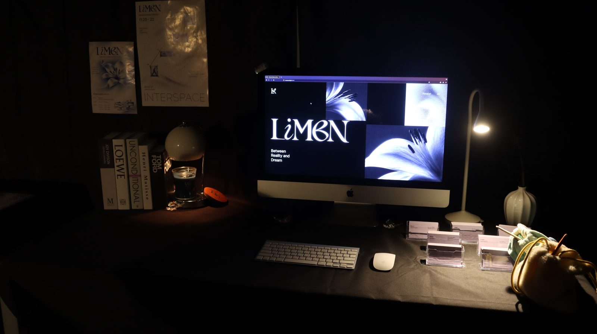
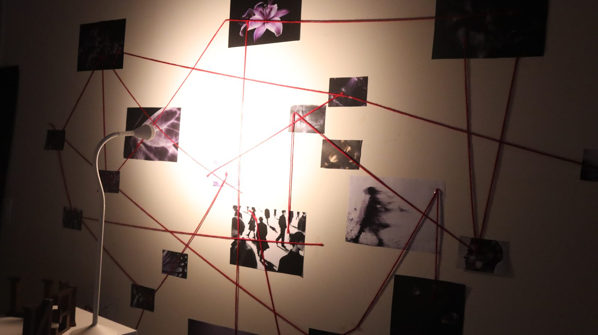
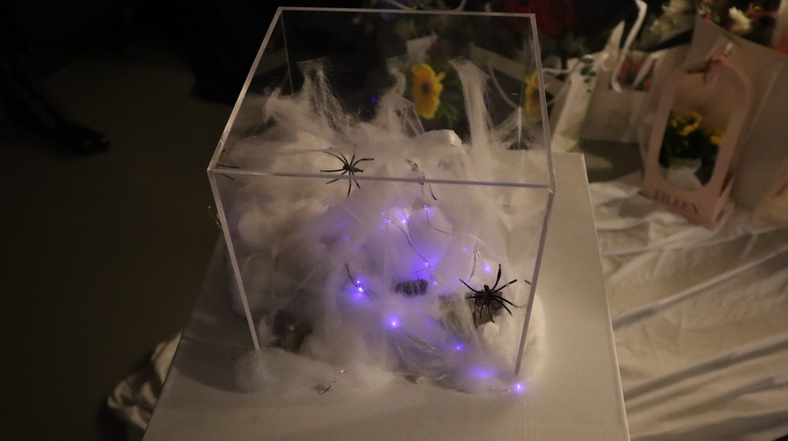
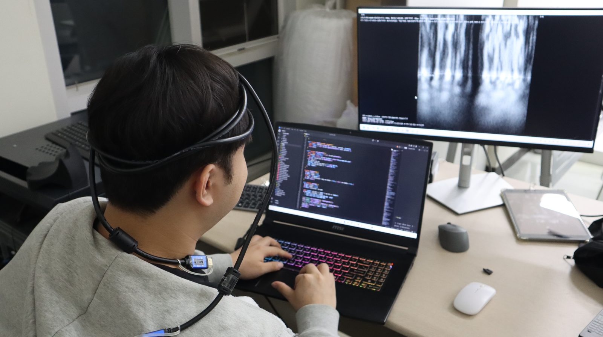
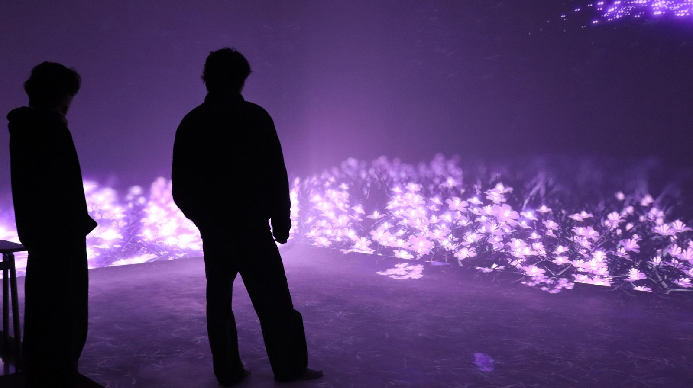
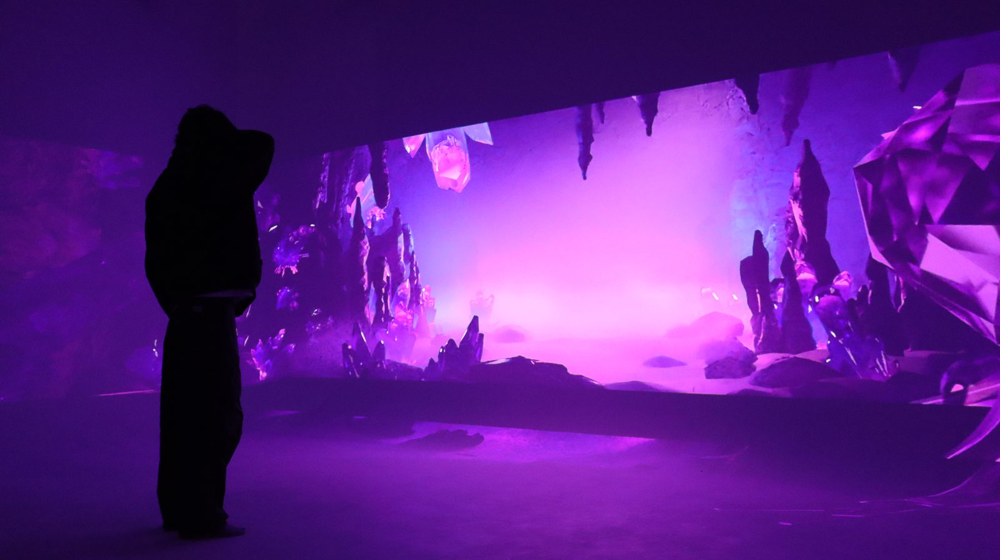
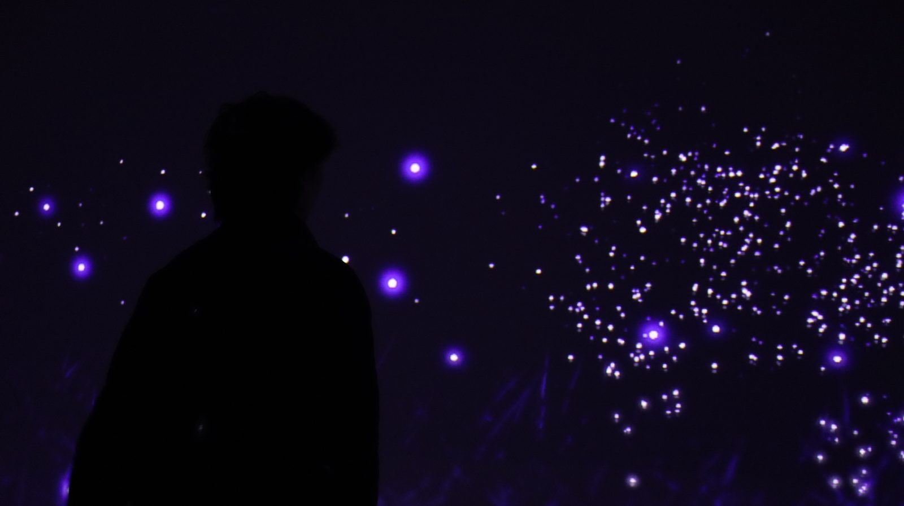
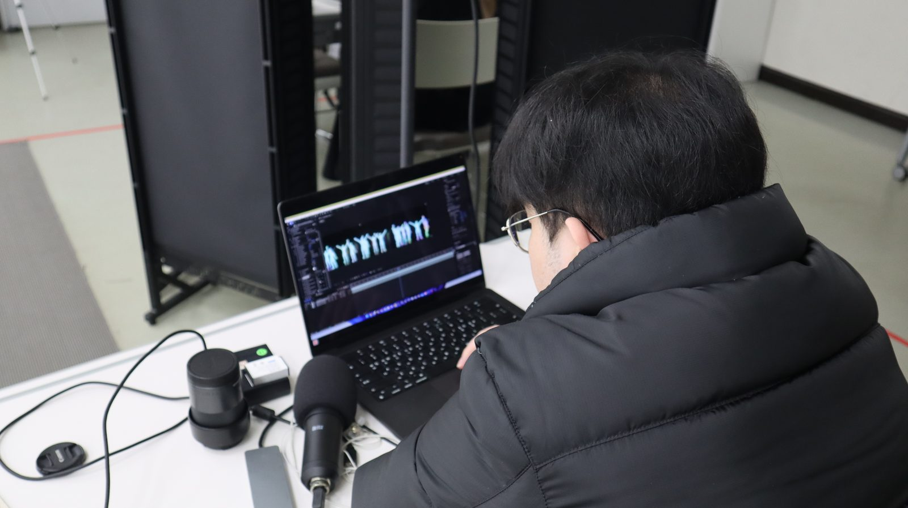
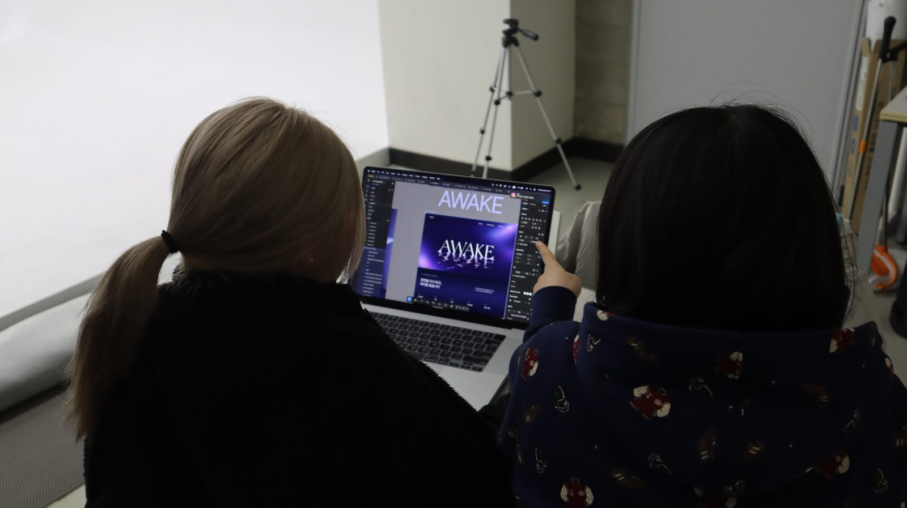
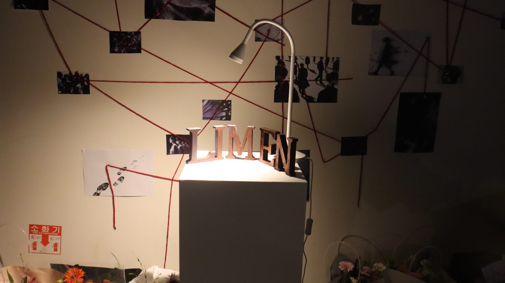

좌표는 강체 변환 하나로
키넥트가 바닥 기울기를 이미 펴 주므로 센서마다 자리(x, y) · 방향 · 거울 세 값만 맞추면 됩니다. 바닥 표식 위에 서서 찍는 보정과, 두 센서가 겹치는 곳을 30초 걸으면 B를 A에 자동으로 맞추는 걷기 보정 두 가지를 만들었습니다. 네 점 호모그래피와 달리 점 하나가 틀려도 방 전체가 휘지 않습니다.
01 · INSTALLATION
SNOOZE 졸업 전시 · 4면 실시간 인터랙션 개발과 전시 경험 설계
AI 협업
정면 · 좌 · 우 벽과 바닥, 네 면에 투사한 공간에서 관객의 몸이 장면을 바꾸는 몰입형 전시입니다. 키넥트 2대로 방 전체의 관객을 하나로 합치고, 인터랙션 장면을 Unity에서 Unreal Engine으로 옮겨 NDI로 출력했습니다. 개미 폭포와 휴먼씬 두 장면을 만들었고, 2026.11.20 – 22 전시에서 그대로 운영했습니다.
“내가 고른 방향은 정말 나만의 선택일까?”슬로건 · 흐름 속에서, 나의 선택을 마주하다
LIMEN(리멘)은 꿈과 현실의 경계, 선택에 작용하는 영향을 알아차리는 문턱이라는 뜻입니다. 관객은 곤충의 세계에서 시작해 사람의 세계로 이어지는 여섯 장면을 지나갑니다. 장면 속 생명체는 서로의 신호를 따라 움직이고, 관객도 그 흐름의 일부가 됩니다.
네 면은 같은 순간의 한 공간입니다. 벽 세 면은 4320 × 912, 바닥은 1920 × 1200 한 장으로 만들고, MadMapper에서 프로젝터 네 대에 나눠 투사했습니다.
인터랙션 장면 3개와 영상 장면 3개를 번갈아 보여 줍니다. 아래 영상은 모두 2026.11.22 전시 마지막 날 현장에서 녹화했습니다.
| 영역 | 담당 |
|---|---|
| F01 개미 폭포 · 인터랙션 | 유기상 |
| F02 반딧불이 · 인터랙션 | 배정훈 |
| F03 – F05 영상 (나방 · 거미 · 기억 회상) | 김현기 · 배정훈 · 심혜민 |
| F06 휴먼씬 · 인터랙션 | 유기상 |
| 사운드 | 김현기 |
| 웹 UX / UI 디자인 | 김노은 · 조가연 |
| 웹 구현 · Unity 인터랙션 개발 · 키넥트 2대 · Unreal 전환 · NDI 출력 | 유기상 |
전시장 밖에서 시작해 전시장 밖에서 끝나는 관람
관객이 4면 공간에 들어가기 전과 나온 뒤까지 하나의 흐름으로 설계했습니다. 전시장 안의 경험은 LUCID DREAM, 관람을 마친 뒤 다시 돌아보는 웹은 AWAKE로 나눴습니다.
대기 루프는 전시 당일 복도 TV에서 그대로 재생했습니다. 부스에는 AWAKE PC와 함께 장면 이미지를 실로 이은 벽, 오브제, 굿즈를 두었습니다. 방명록은 전시장 PC에서 로컬로 실행했습니다.



방명록도 관람의 마지막 장면으로 만들었습니다. 관객이 사진과 이름, 한 마디를 남기면 작은 곤충 캐릭터가 되어 들판에 나타나고, 돌아다니며 남긴 말을 말풍선으로 보여 줍니다.
05 · BEHIND
센서 한 대로 시작해 키넥트 2대, Unity에서 Unreal까지 바뀐 과정입니다. 단계마다 결정 · 시험 · 남은 일을 개발 기록 문서로 남기며 진행했습니다.
세 인터랙션 장면 모두 설명 없이 들어온 관객이 몇 초 안에 “내 몸에 반응한다”를 알아채는 것을 기준으로 정했습니다. 10.07 사용자 테스트에서 관객이 벽만 보고 바닥 반응을 거의 알아채지 못해서, 위치 반응에 더해 관객이 보고 서 있는 벽에서도 몸 모양 · 몸짓대로 반응이 나오게 만들었습니다.
벽 위에서 개미 떼가 폭포처럼 쏟아집니다. 관객의 실루엣이 장애물이 되어 개미가 몸 둘레로 비켜 흐르고, 몸이 있던 자리만 비어 사람 모양 구멍이 생깁니다.
Unreal로 옮기며 보라색 빛 무리로 다시 만든 장면입니다. 다른 인터랙션 장면과 같은 키넥트 2대 합치기 데이터(관절 좌표 UDP)를 받아 반응합니다.
곤충의 영향 관계를 사람의 사회로 넓힌 장면입니다. 관객이 걸으면 군중이 같은 쪽으로 걷고, 멈춰 서면 관객을 향해 돌아서서 팔 동작을 따라 합니다.
방 폭이 7.2m라 키넥트 한 대로는 전체를 덮지 못했습니다. 공식 Kinect v2 SDK는 PC 한 대에 센서 한 대만 열기 때문에 PC 2대로 나누고, 노트북은 센서 값만 보내고 판단은 모두 메인 PC에서 하도록 했습니다. 센서를 옮겨도 노트북은 손대지 않아도 됩니다.
UDP 39540 · 관절 30fps · 점구름 15fps · 랜선 직결 1 – 2msUDP 39541 관절 · 위치 + NDI 정면 실루엣NDI 벽 4320×912 · 바닥 1920×1200 → MadMapper → 프로젝터 4대키넥트가 바닥 기울기를 이미 펴 주므로 센서마다 자리(x, y) · 방향 · 거울 세 값만 맞추면 됩니다. 바닥 표식 위에 서서 찍는 보정과, 두 센서가 겹치는 곳을 30초 걸으면 B를 A에 자동으로 맞추는 걷기 보정 두 가지를 만들었습니다. 네 점 호모그래피와 달리 점 하나가 틀려도 방 전체가 휘지 않습니다.
입구 쪽 센서는 관객의 등을 봅니다. 키넥트는 사람이 늘 자기를 본다고 가정해서 오른손이 왼손으로 잡혔습니다. 사람마다 바라보는 방향(어깨선의 수직, 걸을 땐 걷는 방향)을 추적해 등을 보는 센서의 몸만 좌우를 바꿨습니다. 팔은 평균하지 않고 더 잘 본 센서 한 쪽 것만 씁니다.
랜선 직결 실기에서 잡혀 있던 사람이 45분 동안 40번 지워졌다 다시 붙었습니다. 센서 번호는 그대로여서 거리 필터 경계 문제로 판단하고, 방 가장자리 0.5m 안쪽을 세이프존으로 두어 그 안에서 놓친 사람은 마지막 위치에 세워 두게 했습니다.
앞 슬롯 사람이 빠지면 뒤 사람까지 0명으로 읽히는 결함을 찾아 슬롯 6개를 모두 검사하도록 고쳤습니다(64가지 배치 × 2경로 검사). 센서 앞에 두 사람이 일렬로 서면 3 – 4명으로 불어나는 증상은 최대 2명 제한으로 막았습니다.
Unreal로 옮긴 뒤에는 합치기 허브를 C++(LIMEN_DK)로 다시 만들어 Unity 메인 없이 돌게 했고, 전시 첫날(11.20) 현장에서 맞추기 쉽도록 보정 격자 화면을 NDI로 띄우는 기능을 더했습니다. Unity에서 맞춘 보정 파일도 그대로 읽습니다.
10.30부터 반딧불이 · 개미 폭포 · 휴먼씬을 Unity HDRP로 옮겨 시험했지만, 휴먼씬의 빛과 안개가 공간 안에 있는 것처럼 보이지 않았습니다. 전시 열흘 전(11.10) 인터랙션 장면 전체를 Unreal Engine으로 옮기기로 했고, 11.14 Unreal판 녹화 · 비교를 거쳐 전시는 Unreal판으로 운영했습니다.
| 문제 | Unity HDRP판 | Unreal에서 바꾼 것 |
|---|---|---|
| 군중의 빛 | 사람이 단색 실루엣 마스크 + 화면 후처리(흐림 · 잔상)라 깊이감이 약함 | 가운데가 차고 가장자리가 옅은 빛의 몸, 빛 번짐 · 젖은 바닥 반사, 뒷줄일수록 옅게 |
| 벽 모서리 | 면마다 카메라가 따로라 빛 번짐이 벽 모서리를 넘지 못함 | 벽 세 면을 한 장(4320 × 912)으로 렌더링해 송출 |
| 입자 | 빽빽한 흰 폭포, 관객 자리에 원형 구멍 | GPU 셰이더 입자 — 가로 512구간에 나눠 출발시켜 고른 폭포 |
| 키넥트 | 키넥트 2대 합치기 · 보정 · 세이프존을 Unity에서 완성 | Unity의 듀얼 키넥트 코드 구조를 분석해 Unreal에 맞게 C++로 다시 짜고, 같은 보정 파일로 키넥트 2대를 그대로 운영 |
| 출력 | Spout → MadMapper (같은 PC 안) | NDI로 벽 · 바닥 2개 송출, MadMapper에서 장면 소스를 바꿔 전환 |
캡스톤 폴더 경로에 한글이 있어 MSVC 미리 컴파일 헤더 단계가 실패했습니다(C1083). 프로젝트를 옮기지 않고 영문 경로 정션(C:\LIMEN_UE)을 만들어 그 경로로 빌드 · 패키징했습니다.
장면들이 관절 25개 좌표만 받아 몸을 직접 그려서, 실제 키넥트를 연결하면 사람이 팔다리 조각을 붙인 블록처럼 보였습니다. 합치기 허브가 정면 실루엣을 NDI로 따로 보내고 장면이 그 마스크를 쓰도록 바꿨습니다(11.17).
같은 인터랙션 규칙을 두고 엔진과 룩을 바꾸며 녹화본으로 비교했습니다. 가상 관객과 키넥트 녹화본을 넣어 매번 같은 조건에서 전후를 봤습니다.
위 세 영상은 녹화 화면에서 정면 벽과 바닥 부분만 잘라낸 것입니다. 전시에서는 여기에 실루엣 마스크를 더해 사람 모양 그대로 갈라지게 했습니다.

가로로 긴 영상은 왼쪽 · 정면 · 오른쪽 벽을 이어 붙인 출력 화면(4320 × 912)입니다. 전시 첫날 휴먼씬에 대한 피드백을 듣고, 남은 전시 기간 동안 비주얼과 인터랙션을 현장에서 바로 고쳐 보완했습니다.






전시 대기 루프로 만든 작업과정 영상입니다. 9월 첫 키넥트 입자 시험부터 공간 설치까지의 기록 23컷 뒤에 타이틀과 LIMEN 웹 메인 영상, COSS × SNOOZE 엔딩을 이었습니다. 개발 로그 영상 · 팀원 휴대폰 영상을 모아 편집했고, 전시 당일 복도 TV에서 반복 재생했습니다.